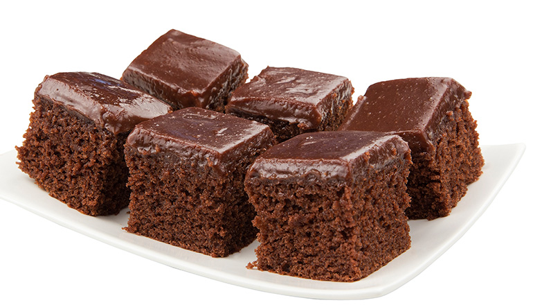
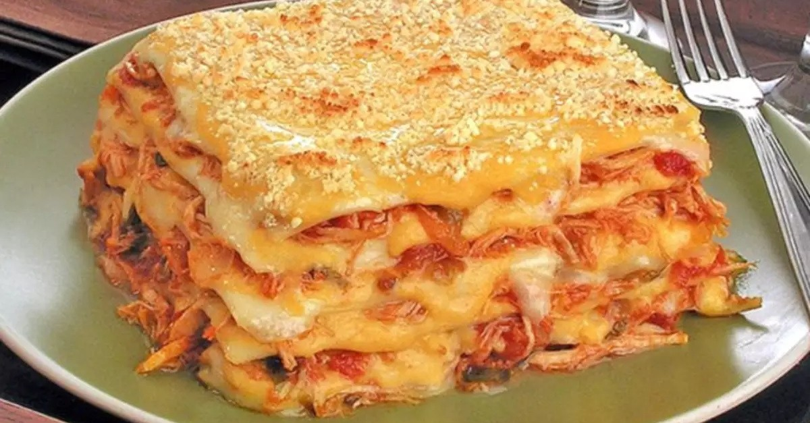
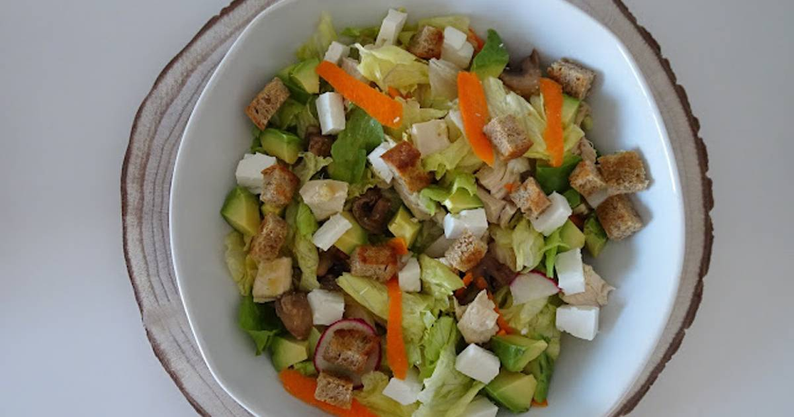

Bolo de Chocolate
Ingredientes:
- 2 xícaras de farinha
- 1 xícara de açúcar
- 1 xícara de chocolate em pó

Lasanha de Frango
Ingredientes:
- 500g de massa para lasanha
- 300g de frango desfiado
- Molho de tomate

Salada Grega
Ingredientes:
- Tomate
- Queijo feta
- Azeitonas